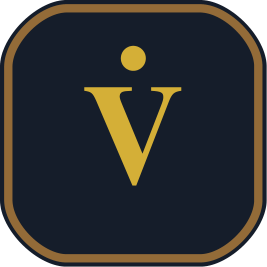
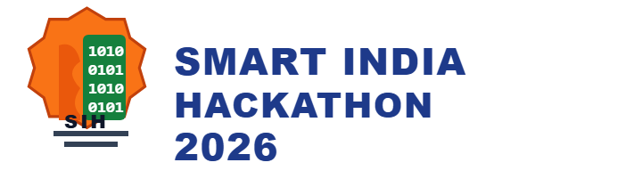
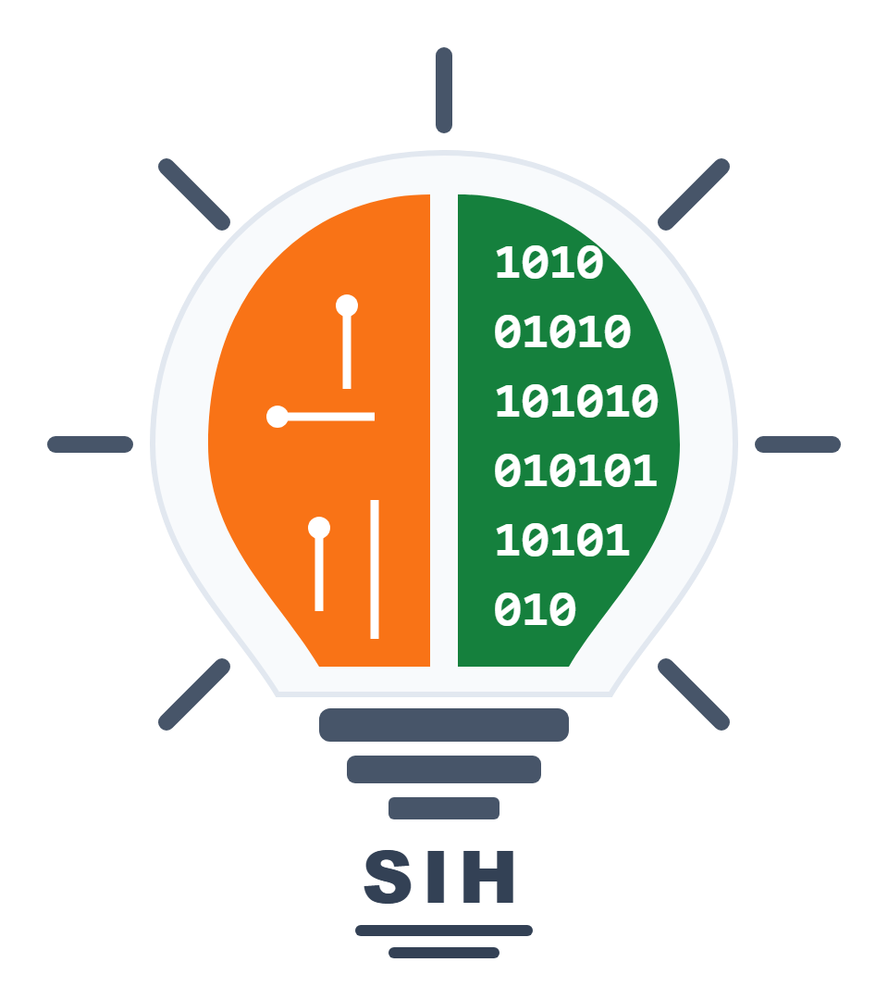
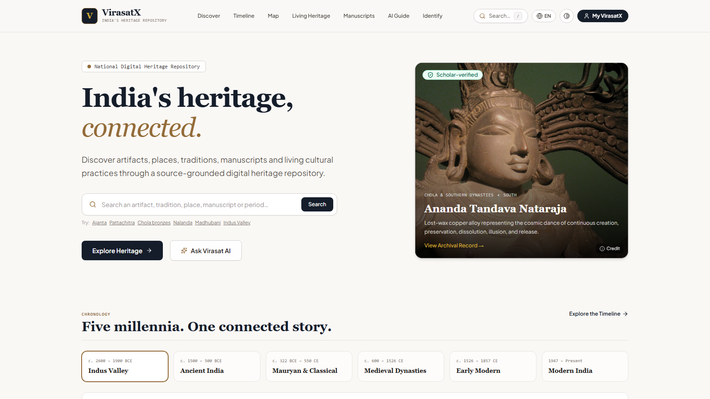
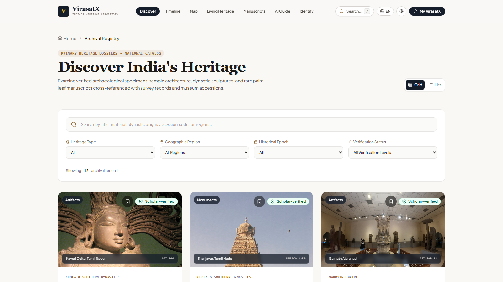
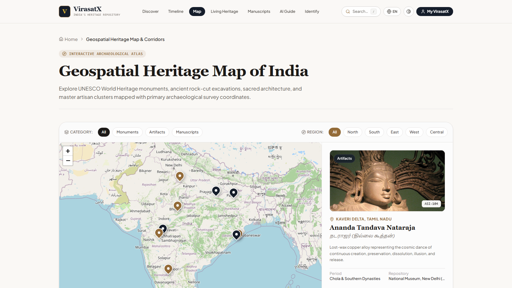
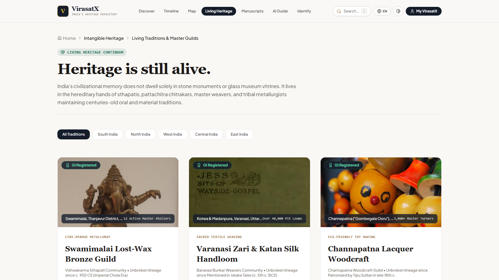
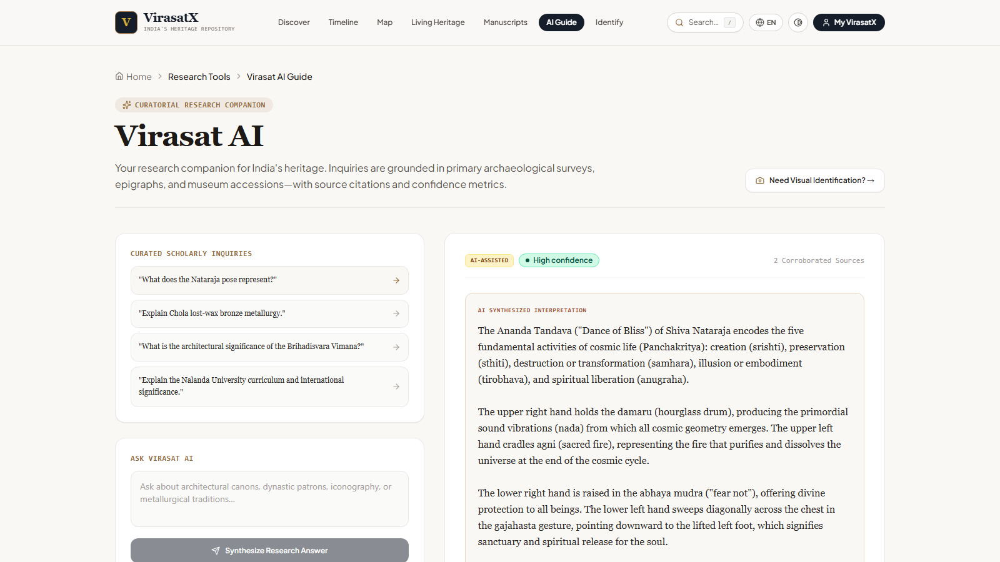

(India’s Heritage, Understood, Preserved & Experienced)
➤Fragmented Heritage Knowledge : India's heritage data is scattered across disconnected monuments, archives, museums, manuscripts, and living communities.
➤Passive Digital Discovery : Existing portals present heritage as isolated, static information instead of an interconnected cultural experience.
➤Low Discoverability of Living Heritage : Traditional craft guilds, master artisans, and regional folklore remain disconnected from monuments.
➤Context Gap : Users discover what a heritage site is, but struggle to understand its period, place, tradition, people, and cultural context together.




➤Unified Heritage Repository : Explore monuments, artifacts, collections, manuscripts, and living traditions in one place.
➤Multimodal AI Guidance : Ask Virasat AI for research inquiries and upload photos for visual iconography identification.
➤Contextual Continuity : Chronological 5,000-year timeline, geospatial GIS corridors, and ancient script paleography.
➤Responsible Cultural Travel : Carrying-capacity advisories and rural craft linkages to empower local artisan economies.
“VirasatX doesn't just display heritage — it connects the cultural context around it.”
➤Secret Shielding : Gemini API keys execute strictly in backend serverless functions; zero keys in client bundles.
➤Defensive SafeImage : Shimmer skeletons with zero layout shift (CLS < 0.05) and archival parchment fallback.
[ASI-104]) with confidence scoring.
<SafeImage /> fallbacks.
• Cultural Preservation & Digitization : Digitally structures and safeguards fragile palm-leaf and birch-bark manuscripts, epigraphical records, and vanishing oral craft knowledge before physical decay occurs.
• Educational & Youth Engagement : Replaces passive textbook memorization with tactile 360° WebGL inspection, interactive geospatial timelines, and voice-assisted exploration for schools and universities nationwide.
• Artisan Livelihood & Sustainable Tourism (SDG 11) : Connects cultural tourists with GI-certified master artisan guilds and disperses tourist crowds from overburdened monuments to lesser-known heritage clusters.
| Feature | Existing Portals | VirasatX |
|---|---|---|
| Interconnected Cultural Context | ❌ | ✔ |
| 360° WebGL Archival Studio | ❌ | ✔ |
| Visual Iconography AI Scanner | ❌ | ✔ |
| Grounded ASI Accession Citations | ❌ | ✔ |
| Living GI Artisan Guild Linkages | ❌ | ✔ |
| Ancient Manuscript Decipherment | ❌ | ✔ |
| Responsible Travel & Carrying Capacity | ❌ | ✔ |
| 100% Local Media SafeImage Pipeline | ❌ | ✔ |
• Most existing portals are isolated, static, and text-heavy; designed only for administrative filing.
• Separate websites for monuments, museums, manuscripts, and tourism with zero cross-linking.
• AVAILABLE SITES : ASI Portal / NMMA / State Tourism Portals / Commercial Travel Apps
• One Ecosystem : Unites monuments, artifacts, manuscripts, and living traditions.
• Evidence-Aware : Real-time RAG citing exact ASI accession records [ASI-104].
• Tactile & Geospatial : 360° Three.js WebGL studio and 6-corridor Leaflet atlas.
• Ethical Custodianship : Promotes GI craft guilds with zero personal contact exposure.